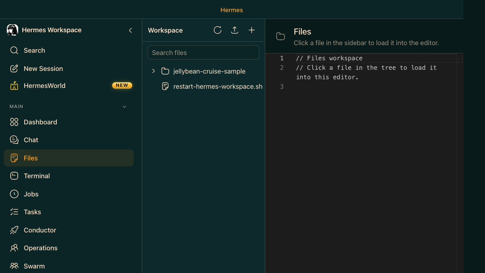

Section 12
🖥️ Layer 3 · Hermes Workspace
Files & Terminal — Your Workspace in the Browser
ELI10
Hermes Workspace ships a full file browser with Monaco editor (the same editor as VS Code) and a real PTY terminal in the browser. You can read files, make edits, and run commands without leaving the Workspace — on any device, including your phone.
🖥️ Files — Monaco Editor in the Browser
- File tree — left panel shows your full workspace directory
- Monaco editor — syntax highlighting, multi-cursor, keybindings
- Split view — open multiple files side by side
- Edit and save — changes go directly to disk
🖥️ Terminal — Browser PTY
- Full PTY terminal — runs real shell commands, not a simulation
- Color support — full ANSI color rendering
- Cross-platform — works from desktop, tablet, phone over Tailscale
- Multiple terminals — open several terminal tabs simultaneously

Hermes Workspace · Files · Monaco editor with file tree panel
Just Show Me — Files & Terminal in Action
In Workspace Chat, ask Hermes to edit a file and run a command:
You
Do this
Use this prompt in the appropriate chat, terminal, or field.
Paste into chat
Open main.py in the editor, add a --version flag that prints '1.0.0', then run python main.py --version in the terminal to confirm it works.
Expected Result: The file is edited to add a --version flag and the terminal output confirms the command returns the expected version string.
You — mobile workflow
Do this
Use this prompt in the appropriate chat, terminal, or field.
Paste into chat
I'm on my phone. Open the terminal and show me: git log --oneline -10, then the current test results, then any files modified since the last commit.
Expected Result: The terminal shows the requested git log, test results, or modified files for the current repo from the browser terminal.
You — triage a repo from the browser
Do this
Use this prompt when you need a fast repo health pass from the browser terminal and editor.
Paste into chat
Review the repo for likely breakage. Open the most relevant files, run the smallest validation command that checks project health, then summarize: what fails, where it fails, and the most likely root cause.
Expected Result: The repo health check surfaces the most likely failure area and the suggested validation command or related file references.
You — multi-step build-and-verify loop
Do this
Use this prompt for a browser-first engineering loop: inspect files, edit, run tests, and log the exact evidence.
Paste into chat
Build a small validation loop in this workspace: inspect the existing app structure, identify the main test or build command, patch any obvious issue you can justify from the code, run the relevant command, and then provide a concise report with the command output, file changes, and any remaining risks.
Expected Result: The browser-based validation loop results in a real edit, a command run, and a concise status summary of what changed and what remains risky.
⚡Tailscale for mobile access: Install Tailscale on your Mac and phone. Point the phone browser at
http://100.x.x.x:3000. Full Workspace — Files, Terminal, Chat — from your phone on any network.⚡Install as PWA: On mobile Safari, tap Share → "Add to Home Screen." Hermes Workspace becomes a native-feeling app with offline support.
⚡Terminal + Chat together: Open the terminal in one tab, Chat in another. Paste terminal output directly into Chat for instant analysis.